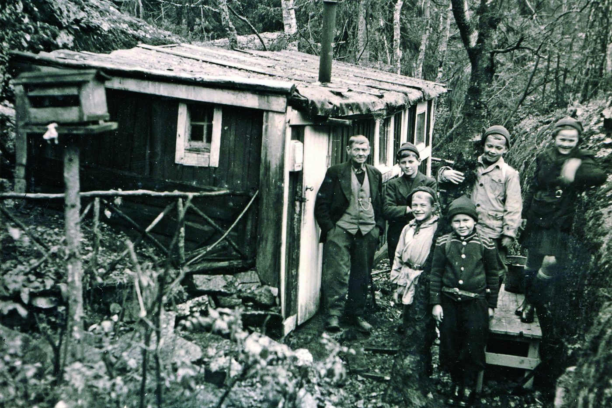
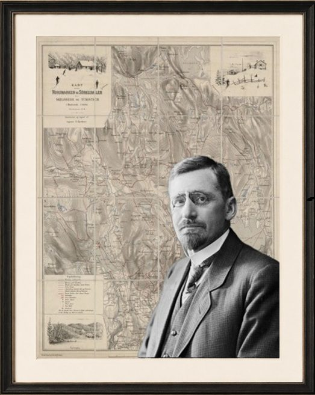

Designsystem
Farger, typografi, avstand og komponenter fra skissene, slik at de kan importeres som stiler og komponenter i Figma.
Farger
Navngitte token fra :root i site.css, og øvrige farger som faktisk er i bruk. Sidebakgrunnen er hvit. Den varme tonen brukes bare inne i paneler og på objektflater.
Typografi
Overskrifter settes i Newsreader 500. Brødtekst, menyer og knapper settes i Plus Jakarta Sans. Prøvene bruker de ekte klassene. Der mobilstørrelsen er en annen, står den etter skråstrek.
Ordmerke
Newsreader 500 · 34–54 px / 28 px mobil · linjehøyde 0,95 · bokstavmellomrom 0,035 em · versaler · farge --red
Slagord under logo
Plus Jakarta Sans 600 · 11,5 px / 9,5 px mobil · bokstavmellomrom 0,16 em / 0,10 em mobil · versaler · farge --muted
Overskrift 1 · Underside
Bøkene om Oslomarka
.intro h1 · Newsreader 500 · 40–60 px / 40 px mobil · linjehøyde 1,02 · bokstavmellomrom −0,015 em. Samme stil på .about-hero h1.
Overskrift 1 · Artikkel
Korpås-Olsen: Eneboer og preparant i Østmarka
.art-head h1 · Newsreader 500 · 38–62 px · linjehøyde 1,03 · bokstavmellomrom −0,015 em
Overskrift 1 · Objektside
På gamle veier og nye stier i Oslomarka
.item__body h1 · Newsreader 500 · 34–48 px · linjehøyde 1,06 · bokstavmellomrom −0,012 em
Overskrift 1 · Hero
På vandring i Oslomarka i 1951
.hero h1 · Newsreader 500 · 28–38 px / 31 px mobil · linjehøyde 1,10 · bokstavmellomrom −0,012 em
Overskrift 2
Flere bøker fra samme forfatter
.section-h h2 · Newsreader 500 · 28 px / 24 px mobil · linjehøyde 1,10. .prose h2 er 30 px / 26 px mobil. .about h2 er 34 px. .year h2 er 30 px.
Overskrift 3 · Korttittel
På gamle veier og nye stier i Oslomarka
.obj__t · Newsreader 500 · 19 px / 16,5 px mobil · linjehøyde 1,22. Artikkelkort .acard .headline er 23 px / 1,18. Rad med tre .row--3 .headline er 25 px / 1,16. Rad med fire .row--4 .headline er 21 px / 18 px mobil.
Tittel i megameny
Foreninger og lag.mm-main__t · Newsreader 500 · 22–27 px / 24 px mobil · linjehøyde 1,15
Ingress
Olaf Olsen (1874–1952) gikk under navnet Korpås-Olsen og hadde sin anonyme tilværelse ikke mange hundre meter fra der mengder av hovedstadens turfolk nå legger sin søndagstur.
.art-head .dek · Plus Jakarta Sans 400 · 20 px / 18 px mobil · linjehøyde 1,55 · farge #3D423E. .intro p er 17 px / 16 px mobil. .hero__dek er 16 px / 15,5 px mobil.
Brødtekst
Heikampen samler bøker, kart, markaminner og historier fra Oslomarka. Teksten settes i Plus Jakarta Sans, med jevn linjelengde og god linjeavstand slik at lengre artikler er behagelige å lese.
.prose · Plus Jakarta Sans 400 · 18 px / 17 px mobil · linjehøyde 1,72 · farge #202421. Vanlig brødtekst på siden er 16 px / linjehøyde 1,55 · farge --ink.
Liten tekst / metadata
.meta · Plus Jakarta Sans 400 · 13 px · farge --muted. .obj__m er 13,5 px / 12,5 px mobil. .hero__credit og bildetekst er 12–13 px.
Etikett / kicker
Markahistorie.label · Plus Jakarta Sans 700 · 11,5 px / 10,5 px i trange rader · bokstavmellomrom 0,14 em · versaler · farge --green. .panel__title og .mm-label er 11–12 px, 700, bokstavmellomrom 0,16 em.
Menylenker
.nav a · Plus Jakarta Sans 600 · 13 px · bokstavmellomrom 0,12 em · versaler. Skjules under 900 px. .menu-btn er samme typografi, 12 px på mobil.
Knappetekst
.btn · Plus Jakarta Sans 600 · 14 px · linjehøyde 1 · bokstavmellomrom 0,02 em · farge hvit på --green. .f-reset er 13 px 600 i --green-dark.
Avstand og grid
Skalaen er hentet fra de verdiene som faktisk brukes i site.css. Beholderen er 1320 piksler bred, med fleksibel ramme og mellomrom.
Avstandsskala
Rutenett, tre kolonner
.grid.grid--3 · brukes i bøker, kart og markaminner
Rutenett, fire kolonner
.grid.grid--4 · blir tre kolonner under 1100 px og to under 820 px
Komponenter
Markup og klasser er kopiert fra skissene. Interaktive flater som megameny og mobilfilter vises statisk i åpen tilstand, uten at man trenger å klikke.
Komponent / Toppmeny
Komponent / Megameny

Komponent / Bunntekst
Bunnteksten åpner med en strek i Ink, som speiler streken under toppen. Uten ordmerke; første kolonne har overskriften «Heikampen.no» over teksten om nettstedet og redaktøren. Kolonnetitler i små versaler (12 px, 700, sperret .16em), lenker i Plus Jakarta Sans 15 px. Hvit bakgrunn, ingen tone. Fire kolonner på desktop (Heikampen.no, Samlingen, Om Heikampen, Kontakt), tre under 1180 px med teksten om nettstedet over hele bredden, to under 820 px med Kontakt over hele bredden. Bunnlinjen bruker Linje-streken og Dempet tekst.
Komponent / Knapper
Komponent / Lenker
Vanlige lenker arver tekstfarge og har ingen understrek. I byline og faktaruter markeres lenken med en linje under. «Vis alle» og hover på titler bruker mørk grønn.
Komponent / Brødsmuler
Komponent / Artikkelkort

Korpås-Olsen: Eneboer og preparant i Østmarka
Olaf Olsen (1874-1952) gikk under navnet Korpås-Olsen og hadde sin anonyme tilværelse ikke mange hundre meter fra der mengder av hovedstadens turfolk nå legger sin søndags-tur.

Mix-klubben
For hundre år siden ble det sagt at det var lettere å vinne OL-gull på ski, enn å vinne klubbmesterskapet i Mix-klubben.

Nordmarkas eneste klosterhage
Allemannsretten er mer enn felleseie. Ofte er den et ensomt forhold mellom enkeltmennesker og små naturperler.
Komponent / Fremhevet artikkel

Ernst Bjerknes – ingeniøren som tegnet verdens første skikart
Ernst Bjerknes var en allsidig og viljesterk mann som satte spor etter seg på mange områder. Gjennom et langt liv satte han spor i Nordmarka, Kristiania og en rekke andre steder i Norge.
Komponent / Bokkort

Komponent / Kartkort


Komponent / Markaminnekort


Komponent / Organisasjonskort

Maridalens Venner
Etablert 1970Maridalens Venner ble stiftet i 1970 for å hindre at dalens gårder skulle bli revet. På 1980- og 90-tallet var det arbeidet for vern av Maridalen og kampen mot golfbaneanlegg som fikk mest oppmerksomhet.

Skiforeningen
Etablert 1883Skiforeningen (Foreningen til Ski-Idrettens Fremme) ble stiftet i 1883, og er en av Norges eldste friluftsorganisasjoner. Skiforeningen arbeider for å fremme skiidrett og friluftsliv, særlig i Oslomarka.
Komponent / Kategorifaner
Komponent / Søk og filter
Venstre kolonne slik den vises på desktop. De to første gruppene er åpne, de øvrige lukket. Ett valg er huket av, så avkrysning med antall vises.

Komponent / Søk og filter, mobil
Panelet som glir inn fra venstre under 900 px, vist åpent og i dokumentflyt. Fotlinjen med «Vis N bøker» og «Nullstill» er synlig.
Komponent / Vis flere
Skissene har ikke sidetall. Arkivsidene bruker denne fotlinjen i stedet for paginering.
Komponent / Mest lest
Komponent / Handlingsfelt
Komponent / Skjemafelt
Skissene har ikke et kontaktskjema. Feltene under er søk, sortering og avkrysning slik de brukes i meny og filter.